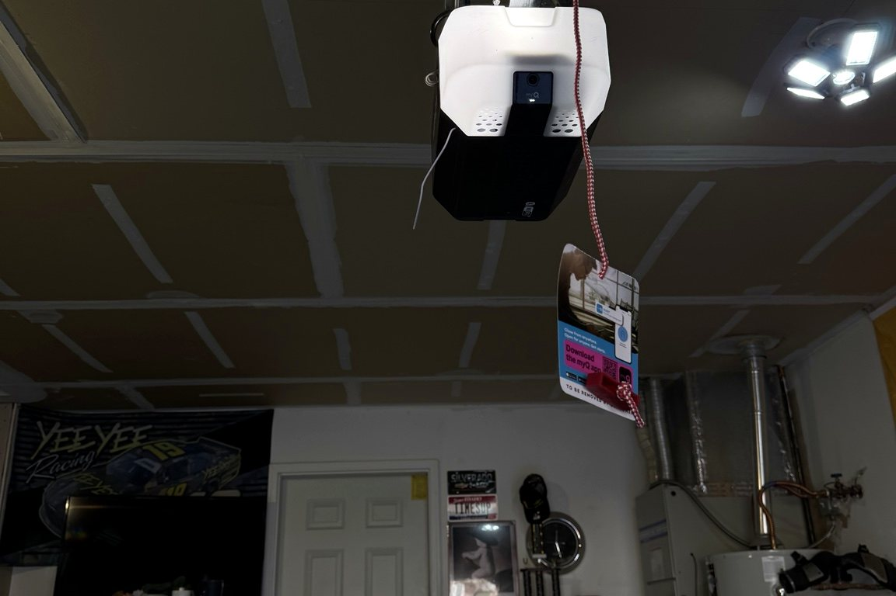

Opener Diagnostics
Troubleshooting for motors, circuit boards, travel limits, wall controls, and power issues.

Garage Door Opener Repair • Boise Idaho
If the door will not open, reverses unexpectedly, works intermittently, or the motor is struggling, LiftX diagnoses the complete system before recommending opener repair or replacement.
Service Details
The opener is not always the actual problem. A heavy or unbalanced door, worn spring, damaged roller, or track issue can force an opener to work harder than it should.

Troubleshooting for motors, circuit boards, travel limits, wall controls, and power issues.
Sensor alignment, wiring checks, obstruction issues, and safety-reversal troubleshooting.
Professional replacement for residential openers and commercial operators.
Remote programming, keypad setup, wall stations, and basic access troubleshooting.
Inspection for strain caused by poor door balance or worn mechanical components.
Controls, limits, safety devices, wiring problems, and operator-door coordination.
Why LiftX
LiftX checks the balance and mechanical condition of the door before blaming the motor. That helps prevent replacing an opener that is struggling because of another failure.
The door should move properly by hand before relying on the opener.
Worn springs or cable problems can create excessive opener strain.
If repair makes sense, we repair it. If replacement is smarter, we explain why.
Qualifying repairs and installations are backed by a 1-year workmanship warranty, including three scheduled maintenance visits during the warranty period. Manufacturer coverage may also apply to eligible parts and equipment.
View Warranty DetailsService Areas
Common Questions
Common causes include blocked or misaligned safety sensors, incorrect travel settings, excessive resistance, track issues, or a mechanical problem with the door.
It may try, but it should not. The opener is not designed to replace the lifting force of the spring system, and repeated attempts can damage the operator.
Yes. LiftX installs residential openers and commercial operators selected for the door size, use, headroom, and application.
Related Services